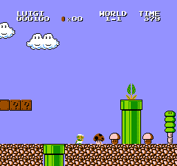
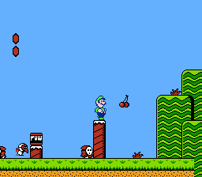
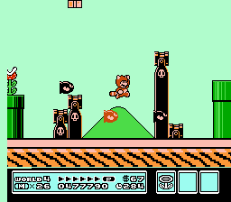

Powrót do strony głównej
Super Mario Bros.

Pierwsza część gry z serii Super Mario, wydana na platformę Nintendo Entertainment System (NES) przez Nintendo w 1985. W tej części do zdobycia jest pięć bonusów: Coin, Magic Mushroom, Fire Flower, Starman i 1 up Mushroom. Spotkać można 15 różnych przeciwników, z których najpopularniejsi to Goomba oraz Koopa Troopa. Można zagrać Mario lub Luigim. Do przejścia jest osiem światów po cztery poziomy każdy.
Super Mario Bros.: The Lost Levels

Część znana w Japonii jako Super Mario Bros. 2, bezpośredni sequel do Super Mario Bros. W tej części gry został lekko ulepszony silnik gry, zmieniono grafikę. Gra jest znana ze swoich trudnych poziomów. Gra została wydana na NES w 1986. W tej części można zdobyć te same bonusy co w poprzedniej części i jest też tyle samo różnych przeciwników (15). Do przejścia jest trzynaście światów po cztery poziomy.
Super Mario Bros. 2

W Japonii znana jako Super Mario USA, wydana w 1988 na NES poza Japonią, w Japonii dopiero w 1992. W grze można zagrać czterema różnymi postaciami: Mario, Luigim, Toadem i Peach. Pokonać można 21 różnych przeciwników, jednego mini-bossa i 6 bossów. Do przejścia jest siedem światów, sześć po trzy poziomy i siódmy z dwoma poziomami.
Super Mario Bros. 3

Wydana w 1988 na NES, chwalona za rozbudowaną rozgrywkę i poziomy. Do gry dodano sześć nowych wzmocnień: Super Leaf, Tanooki Suit, Magic Wing, Frog Suit, Hammer Suit i Goomba's Shoe. Poza poziomami do przejścia są także specjalne części gry gdzie można zdobyć wzmocnienia. Do przejścia jest 8 światów, wszystkie kończą się poziomem na latającym statku poza ostatnim, który kończy się w zamku Bowsera. Do pokonania jest 9 bossów i 63 przeciwników. W przeciwieństwie do poprzedniej gry, można zagrać tylko Mario.